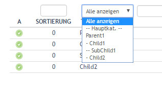
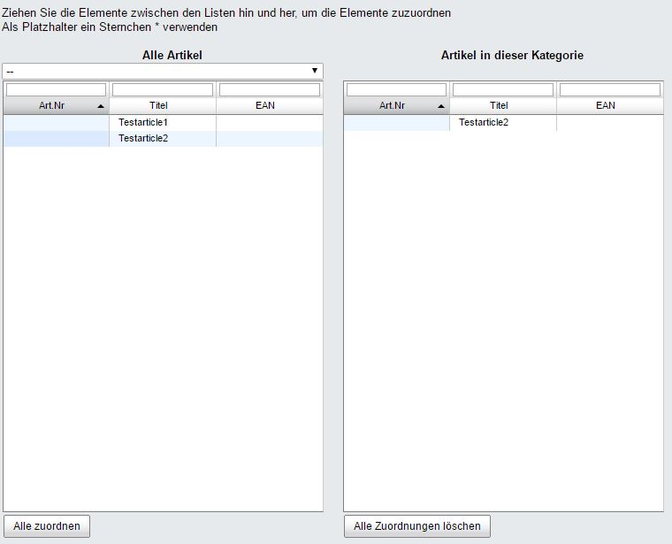
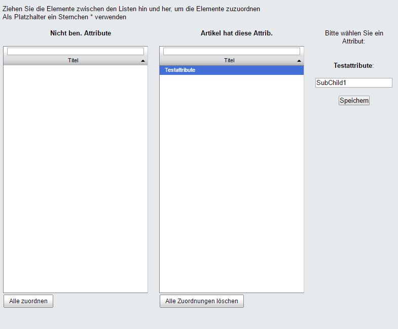
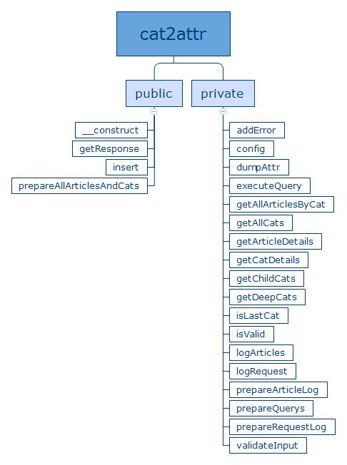

oxid-cat2attr is a simple PHP class for OXID eSales, that will transfer category assigned articles into an attribute.
Example
You have the article 'Testarticle2' assigned to SubChild1.
The PHP script will fill a specific attribute in that article with the name of the category.
Result:
Installation
oxid-cat2attr is a simple PHP class that depends on OXID eSales.
Simply copy all of 'copy_this' to a folder of your choise. My recommendation is the 'service' folder in the root directory.
How to use?
Require the whole class:
require_once('inc/cat2attr.class.php');
Instantiate a new object of the class:
$oCat2attr = new cat2attr(array(
'BOOTSTRAP_PATH' => '../../bootstrap.php'
));
Following options are available in the settings array of the constructor:
| Name | Description | Type | Default | Required |
|---|---|---|---|---|
| BOOTSTRAP_PATH | Path to your bootstrap.php in the root folder of your OXID eSales installation. | String | '' | Yes |
| SEPERATOR | Seperator that will be used to split the collected category names. | String | ', ' | Yes |
| GIVEN_TOKEN | If you want to verify the access to the class by a token, you can parse it here. | String | '' | No |
| ACCESS_TOKEN | If you want to verify the access to the class by a token, parse the default token here. | String | false | No |
To start the whole process:
$cat2attr->insert(array(
'CAT_ID' => 'ad0234829205b9033196ba818f7a872b',
'ATTR_ID' => '098f6bcd4621d373cade4e832627b4f6',
'LOG' => TRUE,
'CLEAN_DB' => TRUE,
'SEARCH_MODE' => 1
));
Following options are available in the settings array of the function:
| CAT_ID | The category OXID that will be searched. | String | '' | Yes |
|---|---|---|---|---|
| ATTR_ID | The attribute OXID that will be filled with all the category names of 'CAT_ID'. | String | '' | Yes |
| LOG | If true each article will be saved in a csv file. | boolean | true | Yes |
| CLEAN_DB | If true all filled attributes with OXID 'ATTR_ID' will be dumped before insertation. | Boolean | true | No |
| SEARCH_MODE | If 0 the search query will only search for direct child categorys of 'CAT_ID'. If 1 the search query will search for the deepest child available. If 2 the search query will simply select all childs and childs of the childs and so on. | Integer | 0 | Yes |
To get a response:
echo $cat2attr->getResponse();
This will give you a JSON encoded message with following format:
{"success":false,"request_tokens":[],"changed_articles":[],"validation_errors":[],"system_errors":[]}
A successful response looks like this:
{"success":true,"request_tokens":["2eedc3c0d71a34d77e78e4d5a298f161"],"changed_articles":{"2eedc3c0d71a34d77e78e4d5a298f161":1105},"validation_errors":[],"system_errors":[]}
'success' should be self explanatory. If any errors occur, they will be stored in 'validation_errors' or 'system_errors'. 'request_token' is very smart. On every insert call, a unique md5 hash will be stored as reference. You can also see the changed articles of the request.
API
The project comes with a build in API. It is located in the index file of the root directory. There are two modes. Visual confirmation and instant process.
The API can be customized by following GET params:
| catId | The category OXID that will be searched. | String | false | Yes |
|---|---|---|---|---|
| attrId | The attribute OXID that will be filled with all the category names of 'catId '. | String | false | Yes |
| confirm | If true, a table will be displayed will all articles and categorys without actually inserting them. So you have the abilty to confirm it. If false, it will be inserted instantly. | Boolean | false | No |
| log | If true, the request and all changed articles will be logged in a csv file. | Boolean | true | Yes |
| token | If you want to verify the access to the class by a token, parse the default here. | String | false | No |
| cleanDb | If true all filled attributes with OXID 'ATTR_ID' will be dumped before insertion. | Boolean | true | No |
| searchMode | If 0 the search query will only search for direct child categorys of 'CAT_ID'. If 1 the search query will search for the deepest child available. If 2 the search query will simply select all childs and childs of the childs and so on. | Integer | 0 | No |
Class Documentation
License
Distributed under the MIT license.
Contact me
Feel free to contact me on Twitter @beno182